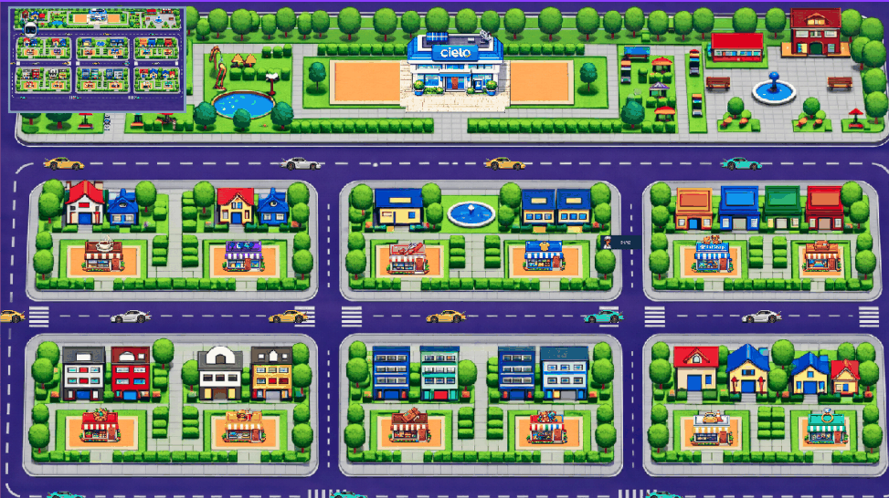
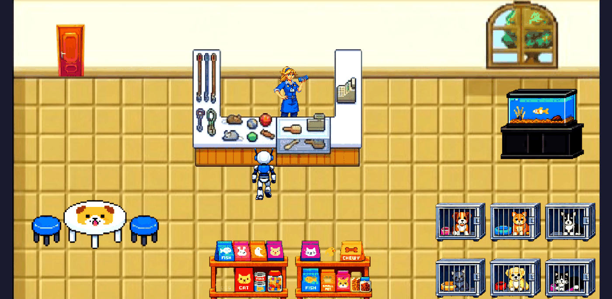
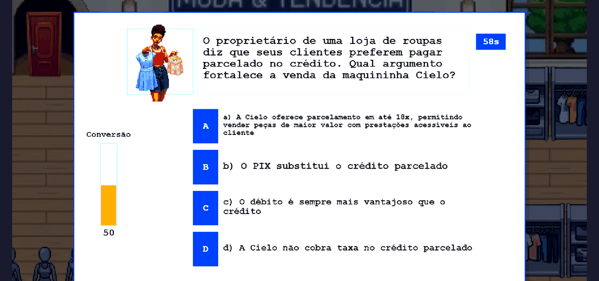

As Aventuras de Marcielo
 Projeto acadêmico do Inteli com a Cielo
Projeto acadêmico do Inteli com a Cielo
Sobre o projeto
Serious game web desenvolvido para a Cielo, com 12 lojas em um cenário de cidade que simula a rotina real do Gerente de Negócios. O jogador busca maquininhas, gerencia recursos e toma decisões em ambiente seguro para aprender antes de vender. Quiz de 4 níveis com feedback instantâneo, cultura Cielo embarcada na experiência, 20 sons, mini mapa e HUD de progresso. Aprovado pela Cielo para implementação nos treinamentos.
A dor era de acesso: o treinamento dos Gerentes de Negócios existia apenas no formato presencial, o que limitava quem conseguia participar por região e criava diferença de preparo entre as equipes.
Tecnologias utilizadas
Minha contribuição
Atuei como Desenvolvedor, sendo responsável por construir mecânicas do jogo, integrar o quiz de 4 níveis e ajustar a experiência junto ao time em sprints Scrum.
Galeria

Tela inicial
A tela inicial apresenta o Marcielo, mascote robô da Cielo, em frente a uma cidade cheia de lojas coloridas. É o ponto de entrada do treinamento: o jogador escolhe continuar a jornada ou ajustar as configurações antes de mergulhar no cenário.

Mapa da cidade
Vista aérea da cidade com os 12 bairros e suas respectivas lojas. O jogador navega pelo mapa decidindo quais estabelecimentos visitar, gerenciando tempo e recursos enquanto expande sua carteira de clientes.

Gameplay na loja
Dentro de cada loja o jogador controla o Marcielo em perspectiva top-down, interage com NPCs e coleta maquininhas espalhadas pelo ambiente. Cada visita simula situações reais de atendimento antes de encontrar clientes de verdade.

Sistema de Quiz
Ao final de cada fase, o jogador enfrenta um quiz com 4 níveis de dificuldade progressiva. As perguntas refletem a cultura e os processos da Cielo e cada resposta traz feedback imediato, garantindo que o aprendizado gere retenção real.